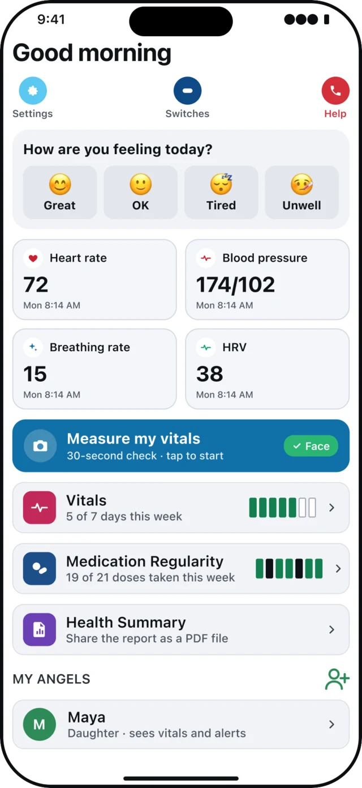
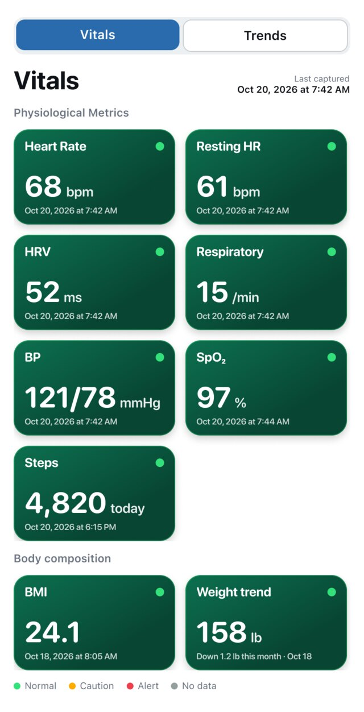
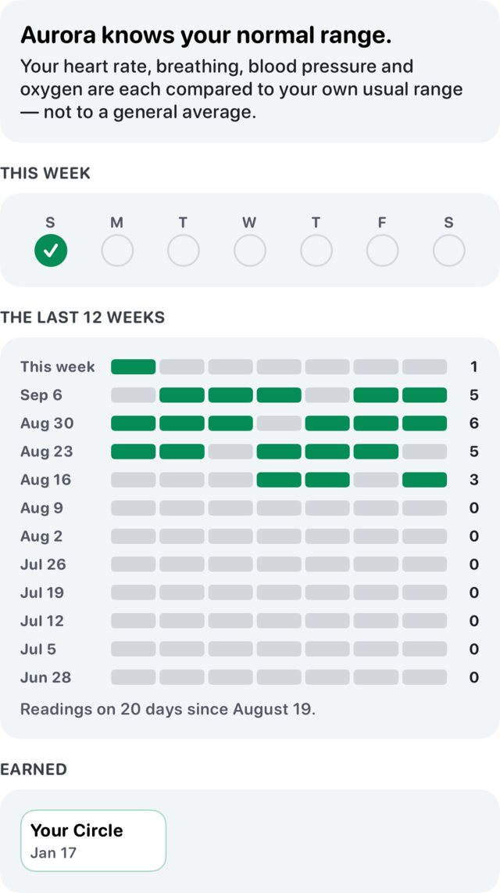
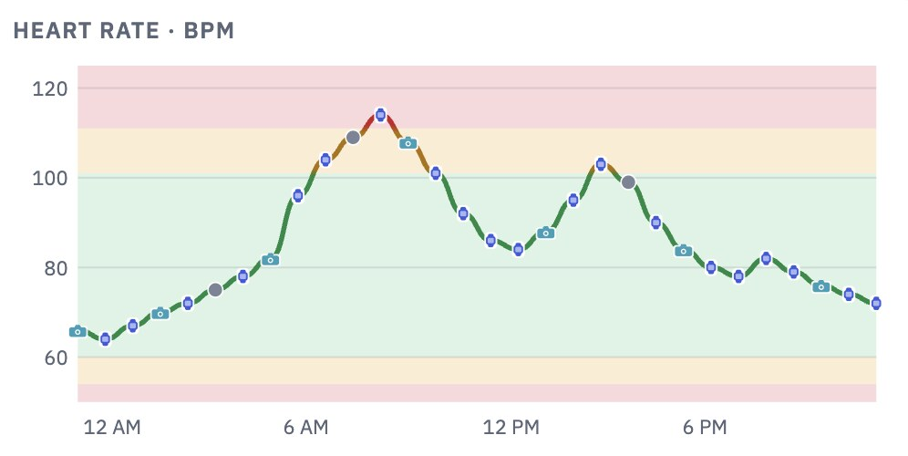
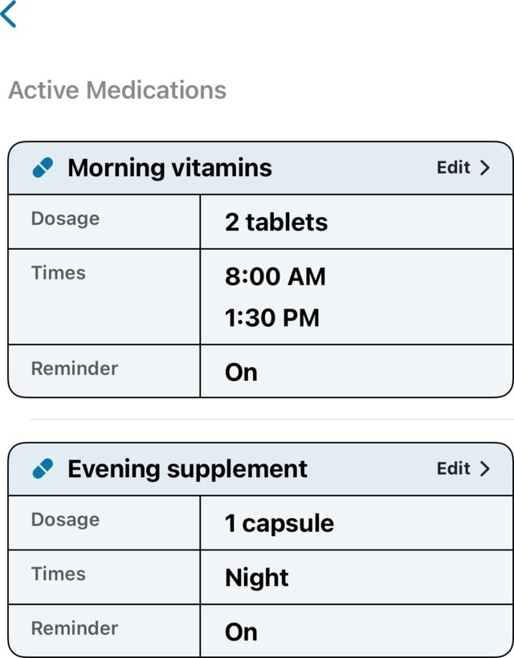
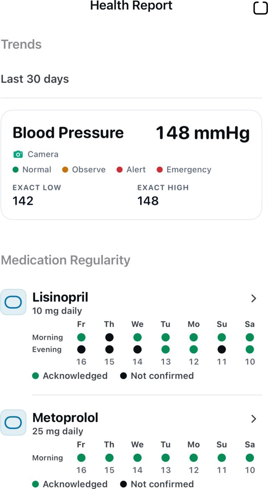
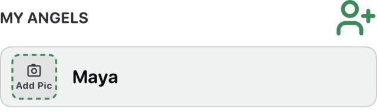

▯
Mobile device: Primary Device
Capture daily vitals using a mobile device without requiring new hardware.
For Stars
Aurora Care helps senior adults keep routine, dignity, and control while making care changes easier to see.
Capture daily vitals using a mobile device without requiring new hardware.
Watch what changes from the Star’s normal pattern.
Bring health context into one daily picture.
Care alerts when movement is difficult.
Location awareness for memory-care and wandering concerns.
The Star chooses trusted Angels and permissions.
See it in the app
Real screens from the Star's own phone.

How you feel today, your latest readings, and a Help button.

Heart rate, breathing rate, and more, each with the time it was taken.

Each reading is compared with your usual range, not a general average.

Reading markers
Every reading sits on bands set for you: green is your usual range, amber and red are outside it. Each marker shows where the reading came from: the camera check, a wearable, or another source.

Doses, times, and reminders in one list.

Thirty days of trends and medicine regularity, shared as a PDF.

Invite the people you trust, and see who has joined.
Screens from the Aurora Care app, shown with sample data.
Aurora Care supports earlier awareness and follow-up. It does not replace clinicians, emergency services, or medical diagnosis.